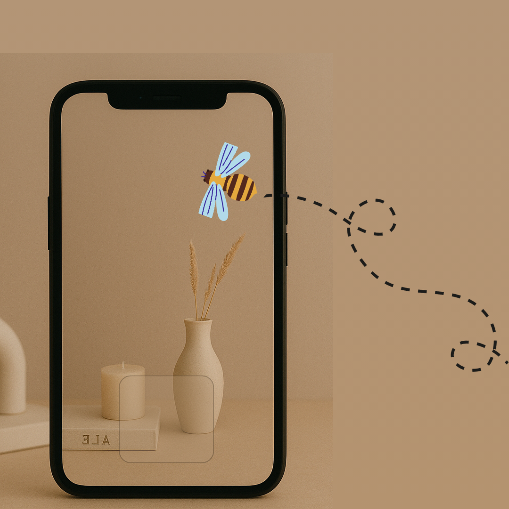

awARe: Stroke Rehabilitation App
Post-stroke spatial neglect reduces a person’s awareness of one side of their environment. I helped develop a gamified augmented reality app that uses visual scanning exercises to retrain attention to the affected side.

Project Overview
During my final co-op term at the Auckland Bioengineering Institute, I contributed to the development of an augmented reality (AR) rehabilitation tool for post-stroke patients experiencing spatial neglect. The project focused on designing a gamified AR application that encourages patients to actively redirect attention toward their neglected side through guided visual scanning tasks.
Built in Unity, the app integrates adaptive difficulty, customizable settings, and performance tracking to support at-home rehabilitation.
The Problem
Spatial neglect affects up to two-thirds of right-hemisphere stroke patients and significantly impacts daily functioning, independence, and recovery outcomes.
There are currently no consistently effective rehabilitation solutions. Traditional therapy often requires supervised clinical sessions, limiting accessibility and frequency of treatment. There is a need for scalable, engaging, and home-based rehabilitation tools that support rehabilitation and provide measurable progress tracking.
My Contributions
- Designed and implemented core features of an AR rehabilitation application using Unity
- Conducted research on spatial neglect pathology, existing rehabilitation methods, and gaps in current treatment approaches to inform app design
- Implemented customizable settings (neglect-side selection, timer display, difficulty scaling) to support personalized therapy
- Designed and structured performance metrics (completion time, level progression) for future database integration and clinical evaluation
- Iteratively refined UI/UX elements to improve patient engagement and usability
- Helped kickstart early-stage testing and feature validation in a multidisciplinary research environment
Final Outcome / Impact
The result was a functional AR-based rehabilitation prototype that allows patients to perform guided visual scanning therapy from home.
- Gamified rehabilitation to increase patient engagement and adherence
- Customizable neglect-side targeting to support personalized therapy
- A scalable framework that can be expanded with database integration, beta testing, and cross-platform deployment
This project demonstrated how engineering design, neuroscience research, and interactive technology can be combined to create an accessible digital health solution.
Key Skills Applied
- Interdisciplinary collaboration in a research environment
- Augmented reality development (Unity, AR Foundation, plane detection)
- Engineering research & literature review
- Translating clinical research into functional software features
- Gamification for therapeutic engagement
- UI/UX design for medical applications
- Rapid iteration & feature validation